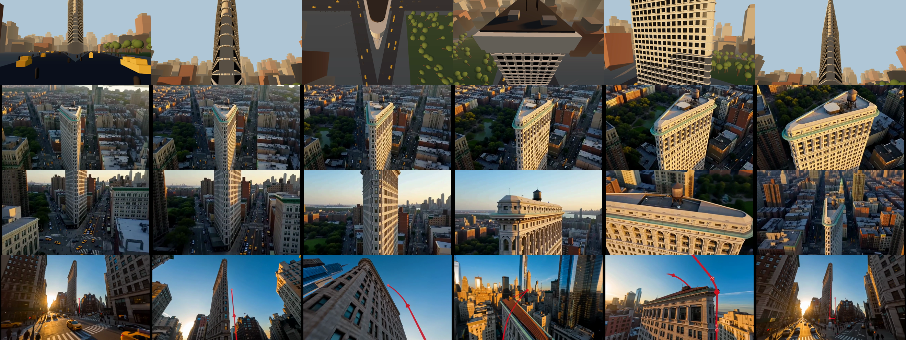
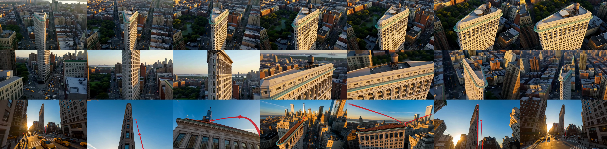

Served from GitHub Pages. Videos are faststart-remuxed and range-served.
Shot-by-shot prompt written from the first 15s of the reference, then generated text-only at
480P, 9:16, prompt_expansion_mode: disabled. All ten shots came back, in order.
The reference itself is NOT published here — only my generation and my prompt.
15s, 9:16. Macro ball → overhead court with her spread-eagled → her to camera → the two-hander walk → him to camera → the contact-sheet board → the world-swap mid-smash → him on court → ball to camera.
Blocking pass. Grey boxes, flat light, no polish — just camera height, subject placement and the beat structure for all nine shots, with the shot name and note burned in. 540×960.
All three ran at 480P, 15s. H3 Max for 1 and 2 with prompt_expansion_mode: disabled
— the default rewrites your prompt with an LLM first, which would have measured the rewriter
instead of the model. Seedance 2.0 for 3, with the two diagrams as [Image1]/[Image2].
All three came back as one unbroken take: 0 cuts detected in every one.
Rows top to bottom: previz · coordinates · code · diagrams. Columns: 0.3 / 2.5 / 5.0 / 7.6 / 11.0 / 14.5s.

Same three results at 0.05 / 3.8 / 6.2 / 8.8 / 10.2 / 13.0 / 14.95s.

A competent continuous aerial orbit, and nothing more. Never reaches street level, never climbs, never crosses the roof. The 31-row coordinate table changed nothing detectable versus what “drone shot of the Flatiron at golden hour” would have produced.
Best structural match. Approach → climb the prow → reach the top → cross the roof, water tower clearly in frame → orbit away. Four of five beats in the right order. It misses the last one: it ends high instead of dropping back to the street, so the loop does not close.
The only one that starts AND ends at street level looking up at the prow — the only one that closes the loop. The altitude arc is right. But it drew the red path line and the numbered dots into 100% of frames, against an explicit instruction not to. Measured: peak 2.17% of frame area in annotation-red, mean 0.55%, versus 0.000% for the previz control and 0.000% for both H3 Max runs.
Same shot, described three ways. The scene block, lighting, lens and single-take rule are identical in all three — the only thing that varies is how the camera move is expressed. Nothing generated yet.
929 words. A metric axis convention plus the drone's XYZ and look-at XYZ every half second, 31 rows. No prose describes the motion — the numbers carry it alone, or they don't.
open prompt 1886 words. The actual camera(t) function, five named
beats. The helix is the real test: azimuth, altitude and radius all driven by the same
u, which states simultaneity in a way prose can't.
591 words plus two images. Plan view and 3D view of the flight path, with six numbered beats keyed across both.
open prompt 3One unbroken 15s take, no cuts. Everything below is chosen so the same shot can be re-specified three ways (coordinates / code / diagram) and the results compared against a single ground truth.
The take. Street-level approach up the wedge → vertical climb of the prow → arc over the roof → descending helix down the lit west face → back to the prow at street level. One full circumnavigation: half over the roof, half around the side. It ends on the axis it started on.
Same take with the instrument readout burned in — live camera XYZ, look-at XYZ, azimuth, radius, altitude. This readout is the raw material for the coordinate method.
The leap now reads: rises as a panther, hangs at the apex above the skyline, and only transforms on the way down. Naked sportbike this time, as asked.
Previz, re-rendered with the higher arc.
Text-only, no references, 7s to generate. All 8 shots, and every cut landed within 0.15s of the time the prompt asked for. The mid-air morph is visible.
15s, 8 shots. Black panther gallops a Singapore street at dusk, pedestrians turn to track it, then it leaps and morphs mid-air into a motorcycle. The morph is one continuous object — paws converge into wheels, spine becomes frame.
THE GENERATION. Text-only, no references, 7s to generate. Scene detection finds 0 cuts — it really is one take. All 8 stages fire in order.
THE PREVIZ it was written from. Marble, seesaw, dominoes, pendulum, bucket+counterweight, tipped chute, turbine, flag.
15s from the prompt alone. Generated in 8 seconds. Hit all ten shots.
15s, 10 shots. Grid between the cars, flag girl, tyre close-up, launch, aerial, side track, drift corner, low chase, run-out.
Three.js CODE prompt. Beat 1 correct, roll coupled. Best 2.0.
Beat prompt trimmed to 4000 chars. Went aerial, skipped beat 1.
Beat + blocking frames. Contaminated - rendered the previz.
Detailed render
Primitives render
2.5 + code prompt
2.5 + beat prompt
2.5 + second-by-second
720p + motion video ref. $9.68
720p + motion video ref. $9.68
{kind=link}
{kind=link}
{kind=link}
{kind=link}
{kind=link}
{kind=link}
{kind=link}
{kind=link}
{kind=link}
{kind=link}
{kind=link}
{kind=link}
{kind=link}